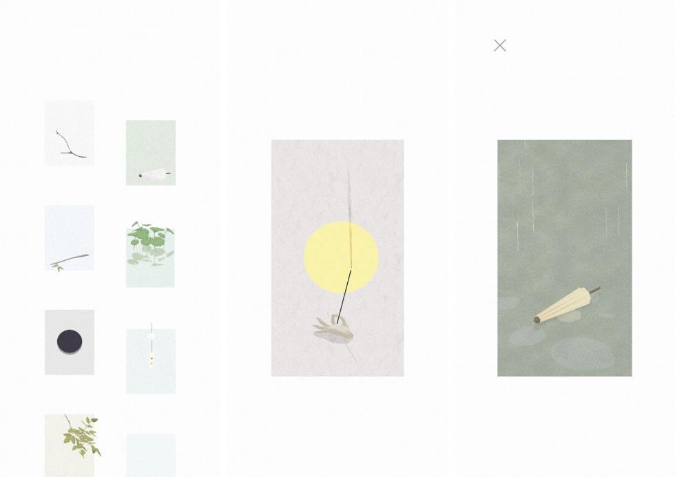
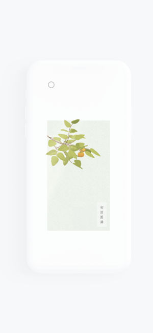

一心院
一座可以感知‘意念’的禅院
获取
生活解决方案
「一心院」
现代都市的人们内心都太浮躁了，做什么事都急于求成没有什么耐心，这里西西推荐大家使用这款一心院app来安抚自己浮躁的心灵。这款软件界面非常简洁，它就像一方小小的世外桃源，当感应到你心无杂念，她便会生机盎然，再现自然的物语，带你跳出喧嚣，获得一念清净。
打开「一心院」，你可以立刻开启一段「佛系人生」。首先，请盯着这片叶子，看它慢慢旋转浮动，期间千万不要被凡尘俗世分了心哟，不然叶子就会重新落回地面，，又得重新开始凝视。
过了树叶这一关，你才算正式打开一心院的大门。院子里有树枝几桠，荷塘一方，秋水几泓，风铃一挂，清香一支，暖炉一座，颇有要超脱尘世，归园田居之感。一心院不靠常力驱动，花开不因日照，铃吟不因风动，香浮不因火燃，就像开篇的叶子一般，这里的一切全都依赖于你专心致志的注视。注视则茶香浓，注视则明月升，注视则雨雪落，一旦分心，则一切回归伊始，就像从未发生一样。在一心院待久了，总觉得自己会有念力似的，快拿把叉子来让我试试。
好吧，虽说叉子表示「内心毫无波动」，但用作休息放松或是提升专注力还是极好的，一心院让这个过程变得更为有趣了。如果你最近总被繁杂琐事困扰，不妨走进一心院，取一片安宁。
- 保持平静
- 凝神注视
- 确保充足光线
- 保持屏幕距离
- 请不要交谈
一座可以感知‘意念’的禅院
一心院
一座可以感知‘意念’的禅院